import matplotlib.pyplot as plt
import numpy as np12 Matplotlib
Matplotlib is a Python library for data visualization. It offers variety of functions to plot different types of graphs which can be customised to create high quality figures. The pyplot function in this library is used for instantiating a matplotlib graph object. The plot function draws a line plot given two sequences of equal length. The get the scatter plot use scatter. Properties such as line-width, line-color, marker-type, etc. can be easily customized using the appropriate keyword arguments. The pyplot object also has functions for decorating the plots with axis-labels, title, text, legend, etc. The show function renders the plot.
x = range(1,11)
y = [a**2 for a in x]
plt.plot(x,y) #line plot
plt.scatter(x,y) #scatter plot
plt.xlabel("Number")
plt.ylabel("Square")
plt.show()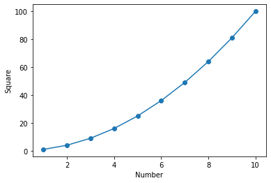
12.1 Styling plots
A plot rendered using the plot function can be styled using specific keyword arguments to control the layout and/or size of different elements within the plot. To customize the marker and line styles, marker and linestyle keyword arguments can be used. Similarly, color (or c) and linewidth (or lw) keyword arguments control the color and width of the line.
In addition, for the plot function, styling can also be done using a format string which specifies different styling attributes. The syntax for this format string comprises of a single letter code for marker style, line style, and color (preferably in this order). The “mlc” format string can be passed as an argument to the plot function. This format string can have all three components or less as requried. Note that if either marker style or line style character is missing then the plotting of marker or line is skipped. And if both marker and line styles are not there then a solid line is plotted with the specified color. The figure below shows data used above in two different representations. On left, the plot uses '^:b' format string while on the right graph uses two different format strings – ':r' (dotted line in red) and '^k' (triangle in black) – in the two calls to the plot function.
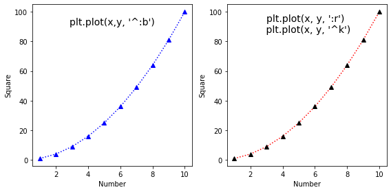
The image below shows some for the options for the marker and line styles available in matplotlib. The character given in parenthesis is used to plot the corresponding marker or line style. Note that these style can further be customized as required, for details please have look at the pyplot.plot documentation.
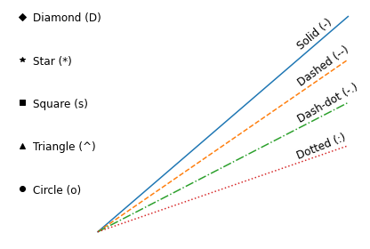
12.2 Components of a matplotlib figure
In addition to the styling options discussed above, matplotlib offers several option to control the aesthetics of a plot. The image below shows the different customizable elements in a matplotlib figure. These elements are accessible via different function available for the pyplot object or the axes object. The axes object is accessible through the gca function for the pyplot object.
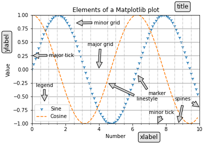
Some of the components of this figure can be modified directly using the pyplot object. E.g., the axes label can be changed using the xlabel and ylabel functions available for the pyplot object. However, to change the x-axis ticks, there is no direct way to do this using the pyplot object. So we need to create an axes object to modify x-ticks. The set_ticks function available for the axes.xaxis object can ge used to specify a list having locations for xticks. Similarly, y-ticks can be customized using the corresponding function for the yaxis. We’ll also remove the top and right borders using spines atribute for the axes object.
x = range(1,11)
y = [a**2 for a in x]
plt.plot(x,y) #line plot
plt.scatter(x,y) #scatter plot
plt.xlabel("Number")
plt.ylabel("Square")
ax = plt.gca()
ax.xaxis.set_ticks(range(1,11))
ax.yaxis.set_ticks(range(0,101,10))
ax.spines[["right","top"]].set_visible(False)
plt.show()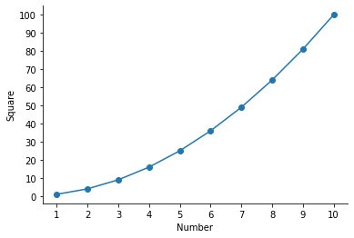
We can also have multiple plots in one graph i.e. different plots sharing the same axes.
x = range(1,11)
y = [a**2 for a in x]
z = [a**3 for a in x]
plt.scatter(x,y,marker="^", color="red")
plt.scatter(x,z,marker="*", color="purple")
plt.xlabel("Number", fontsize=12)
plt.ylabel("Value", fontsize=12)
plt.xticks(fontsize=12)
plt.yticks(fontsize=12)
plt.legend(["Squares","Cubes"])
plt.show()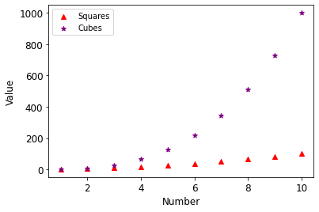
Matplotlib has a variety of in-built graph types that can be used to display information as required. Below are examples of some of the plots available in matplotlib. The title of these plots represent the corresponding function avaiable for the pyplot object.
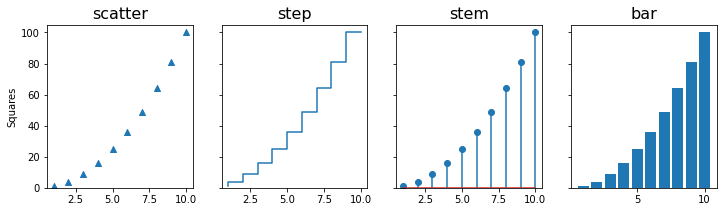
12.3 Error bars
The errorbar function can be used to draw a plot with error bars. The yerr keyword argument specifies the size of the errorbars. By default, a line is drawn connecting the data points, which can be changed using the fmt argument. To plot error bars with ploting the data points, use fmt="none". In this example, we’ll use the 2D numpy array having table of numbers (see the chapter on NumPy for details). The mean value along the rows of the ndarray are plotted as dots and standard deviation as the error bars.
num1 = np.arange(1,11).reshape(1,10)
all_ones = np.ones((10,10), dtype=int)
table_10 = all_ones*num1*num1.T
plt.errorbar(num1[0], np.mean(table_10, axis=0), yerr=np.std(table_10, axis=0),
label="Standard deviation", fmt="o")
plt.legend(loc='upper left')
plt.gca().xaxis.set_ticks(num1.T)
plt.xlabel("Number")
plt.ylabel("Mean")
plt.show()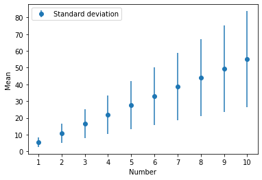
We can also read a csv file which has the values for the data points and error bars in two columns. E.g. the code below reads a csv file and then make an errorbar plot using values in the two columns. The loadtxt function from numpy library is used to read the csv file in to a numpy array.
# %load mean_std.csv
Mean, Std
5.5, 2.87228132
11.0, 5.74456265
16.5, 8.61684397
22.0, 11.48912529
27.5, 14.36140662
33.0, 17.23368794
38.5, 20.10596926
44.0, 22.97825059
49.5, 25.85053191
55.0, 28.72281323data_csv = np.loadtxt("mean_std.csv", delimiter=',', skiprows=1) # skip the header row
data_csvarray([[ 5.5 , 2.87228132],
[11. , 5.74456265],
[16.5 , 8.61684397],
[22. , 11.48912529],
[27.5 , 14.36140662],
[33. , 17.23368794],
[38.5 , 20.10596926],
[44. , 22.97825059],
[49.5 , 25.85053191],
[55. , 28.72281323]])To get the number of rows in the numpy array, the shape attribute is used which return a tuple having number of rows and columns. The number of rows in the array is then passed to the range function to be used as data for the x-axis. For y-axis values and error bars, first and second columns of the array are used, respectively.
plt.errorbar(range(data_csv.shape[0]), data_csv[:,0], yerr=data_csv[:,1], label="Standard deviation", fmt="o")
plt.gca().xaxis.set_ticks(range(data_csv.shape[0]))
plt.xlabel("Number")
plt.ylabel("Mean")
plt.show()
plt.show()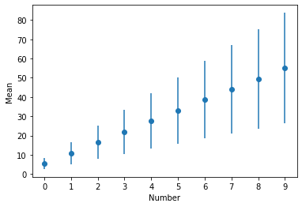
The fill_between function can be used to plot standard deviation as a shaded region instead of error bars. This function takes two y values corresponding to the upper and lower bounds of the region to be filled. Given our data, we’ll create y_upper and y_lower arrays by adding and subtracting standard deviation from the mean, respectively. The alpha argument adjusts the transparency of the shaded region and takes a value between 0 (full transparency) and 1 (no transparency).
y_upper = np.mean(table_10, axis=0) + np.std(table_10, axis=0)
y_lower = np.mean(table_10, axis=0) - np.std(table_10, axis=0)
plt.plot(num1[0], np.mean(table_10, axis=0))
plt.fill_between(num1[0], y_upper, y_lower, alpha=0.2)
plt.xlabel("Number")
plt.ylabel("Mean")
ax = plt.gca()
ax.xaxis.set_ticks(num1[0])
ax.spines[["top","right"]].set_visible(False)
plt.show()
Quiz: Write a program to make a graph as shown below.
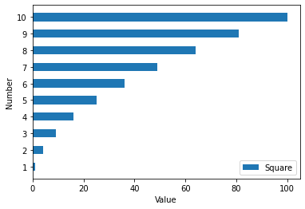
Show answer
y = [a**2 for a in x]
plt.barh(x,y, height=0.5)
plt.xlabel("Value")
plt.ylabel("Number")
plt.yticks(range(1,11))
plt.legend(["Square"], loc="lower right")
plt.show()12.4 subplots
Many a time we need to plot multiple graphs in one figure for effecient visual analysis. In Matplotlib terminilogy these plots are refered to as subplots. The pyplot class has subplots function that return a figure and and axes object. These can be used to access and manipulated different elements of the graph. In addition, subplots can take as argument the total number of plots to create a figure. This function has a keyword argument figsize to specify the size of the plot.
x = range(1,11)
y = [a**2 for a in x]
z = [a**3 for a in x]
fig, ax = plt.subplots(2,1,sharex=True) #two rows and one column
ax[0].scatter(x,y,marker="^", color="red")
ax[1].scatter(x,z,marker="*", color="purple")
ax[1].set_xlabel("Number")
ax[0].set_ylabel("Squares")
ax[1].set_ylabel("Cubes")
plt.show()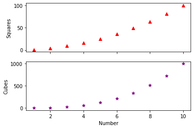
The subplots in the above figure can be stacked horizontally by changing the subplots statement to plt.subplots(1,2).
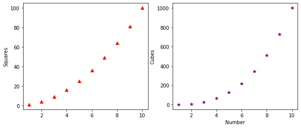
Similarly, we can create different arrangements for subplots and save an image using savefig function of the figure object. The resolution of the resulting image can be controlled using the dpi argument. The alphaargument in the code below is used to make the bars transparent.
x = range(1,11)
y = [a**2 for a in x]
z = [a**3 for a in x]
fig, ax = plt.subplots(2,2) #create subplots with two rows and two columns
ax[0,0].scatter(x,y,marker="^", color="red")
ax[0,1].bar(x,y,color="red")
ax[1,0].scatter(x,z,marker="*", color="purple")
ax[1,0].bar(x,z,color="purple",alpha=0.1)
ax[1,1].bar(x,z,color="purple")
fig.savefig("subplot.png", dpi=300)
plt.show()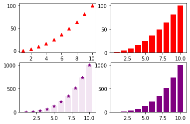
12.5 subplot (without ‘s’)
The subplot() function is similar to subplots with a difference that it take an additional argument - index. This can be used to make axes span multiple columns within the subplot.
x = range(1,11)
y = [a**2 for a in x]
z = [a**3 for a in x]
ax1 = plt.subplot(2,1,1)
ax2 = plt.subplot(2,2,3)
ax3 = plt.subplot(2,2,4)
ax1.scatter(x,y,marker="^", color="red")
ax1.bar(x,y, color="red",alpha=0.1)
ax2.scatter(x,z,marker="*", color="purple")
ax3.bar(x,z,color="purple")
plt.savefig("subplots2.png",dpi=300)
plt.show()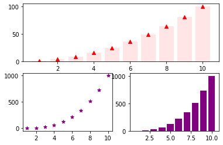
12.6 Venn diagrams
When there are multiple set of items, we might want to analyse the logical relationship between the sets. For instance, how many items are common between two or more sets or how many items are uniquely present in a particular set. Venn diagrams are ideally suited to visualize such logical relations across sets. The matplotlib-venn library provides functions to plot Venn diagrams for two or three sets. It can be installed using pip install matplotlib-venn command.
import matplotlib.pyplot as plt
from matplotlib_venn import venn2The venn2 function takes a list having two sets are an argument and plots the two-circle Venn diagram. The size of each set is in proportion to the items in that set. As discussed in the chapter on sets, a set contains only unique values i.e. if there are duplicates then those are removed.
venn2([set(['A', 'B', 'C', 'D']), set(['D', 'E', 'F'])])
plt.show()
The fill color can be changed using the set_colors keyword argument and the set_labels argument adds the labels for each set. Both these arguments take a set of two values as a valid input.
venn2([set(['A', 'B', 'C', 'D']), set(['D', 'E', 'F'])], set_colors=('pink', 'lightgreen'),\
set_labels=('Set1', 'Set2'))
plt.show()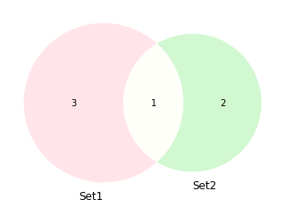
Similarly, venn3 is used for plotting three sets.
from matplotlib_venn import venn3set1 = set(['A', 'B', 'C', 'D'])
set2 = set(['D', 'E', 'F'])
set3 = set(['D','F','G', 'H', 'I'])
venn3([set1, set2, set3], set_labels=('Set1', 'Set2', 'Set3'))
plt.show(){'A', 'C', 'D', 'B'}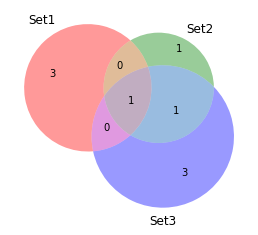
We can further customize the individual components within these plots using the get_patch_by_id and get_label_by_id attributes for the Venn diagram object.
v = venn3([set1, set2, set3], set_labels=('Set1', 'Set2', 'Set3'))
v.get_label_by_id('100').set_text('F') # label for First set
v.get_label_by_id('010').set_text('S') # label for Second set
v.get_label_by_id('001').set_text('T') # label for Third set
v.get_label_by_id('110').set_text('FS') # label for intersection of First and Second
v.get_label_by_id('011').set_text('ST') # label for intersection of Second and Third
v.get_label_by_id('101').set_text('FT') # label for intersection of First and Third
v.get_label_by_id('111').set_text('FST') # label for intersection of all three
v.get_patch_by_id('111').set_color('white') # color for intersection of all three
v.get_patch_by_id('011').set_color('yellow') # color for intersection of Second and Third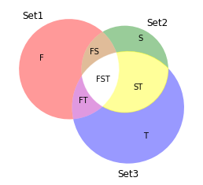
An alternate approach to plot a Venn diagram is to specify the values for the subsets within the Venn diagram instead of giving three sets. As apparent from the output of the venn3 function above, there are a total of seven values that makes up the diagram. Using the subsets keyword argument for the venn3 function we make a similar plot without give a list of sets as an argument.
venn3(subsets=(3, 1, 0, 3, 0, 1, 1), set_labels=('Set1', 'Set2', 'Set3'))
plt.show()